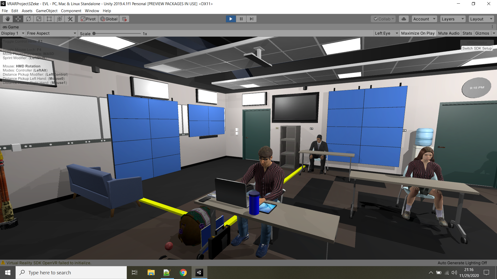
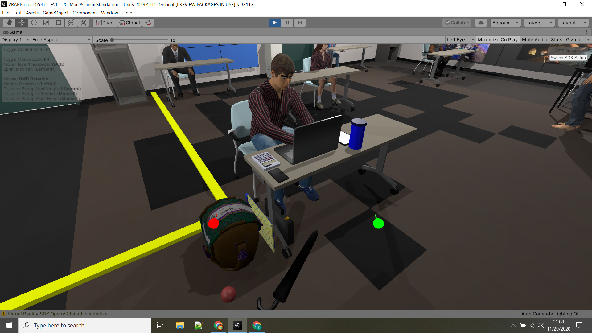
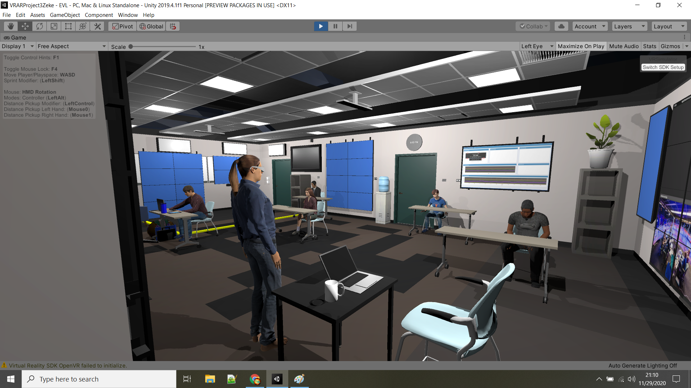
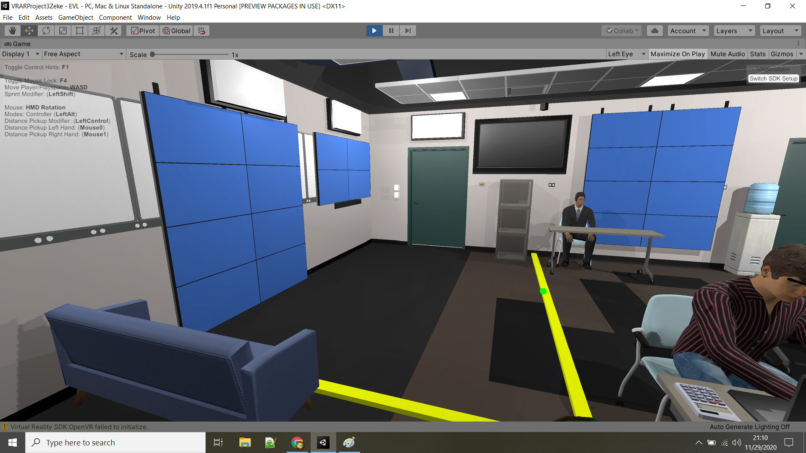
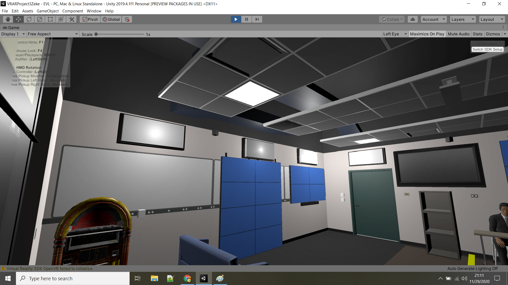
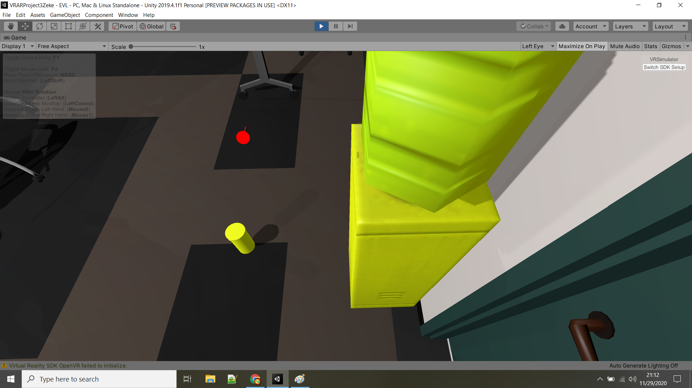

This project uses VRTK to imagine how I personally would like the EVL space to look.

Included is all the stuff I generally take to a class and a little more. This includes a laptop, phone, water bottle, bag, umbrella and notepad which are things I normally take. It also includes a tablet, brief case and calculator which I don't currently take to classes.
All of these objects can be picked up and colide with other objects in natural ways in the space, including the avatars.

The avatars all sit at thier desks, properly distanced, looping through an idol animation. As mentioned previouisly they all have collision on them to allow for interaction with the grabable objects in the room.

This is a view of the VR corner, which I added stuff with the goal of making this space a place where it was easy to demo something for the class. The TV and other dispays are so that the professor or TA can put up a presentation while the other is in the VR demo.

I added lighting to this section as well that way a presentation can happen mostly in the dark. This is to facilitate a presentation in this area of the classroom.

Finally here there are 2 large interactable objects, one is a jukebox that plays music when touched. The other(pictured below) is a water cooler that when touched dispences a water bottle that is grabable.

Juke box - Suheb Qureshi
- Joe Louis Robinson
TV - 3d.rina
Water cooler - bean cube
Bag - Vergis
Laptop, umbrella, brief case, plant, filing cabnet and Phone - RRFrelance/PiXelBurner
Chair - Azusa
Notepad and Calculator - Sten Ulfsson
Cartoon phone ring - Daniel Simion
Rouge ump(song) - The garages at desertbus for hope performed by: MQ / mother love blone / yana / rain / teake / bird / em grace / jennifer cat / slothfella / autumn / seb / INOM / riley / VigilantBaker / tegan / june / nerdy / (im)perfect pitch / AMFSH
Project
GitHub Link
YouTube Install Instructions
Instruction Link
YouTube Presentation Video
Presentation Link